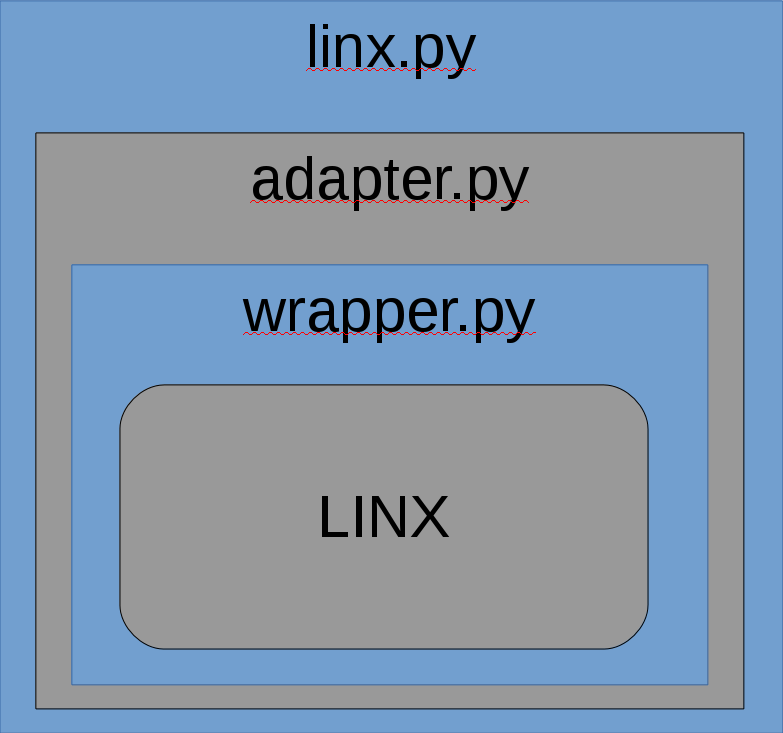

Core Features
- Fast prototyping of system modules
- Simple blackbox testing of embedded systems through a common communication interface
- Simple integration between low level application code and high level Python code
Why Use LINX for Python?
LINX is a distributed communication protocol for embedded systems that supports many different types of communication medium. This includes common types like sockets, CAN and ethernet. When developing distributed applications, early testing of the system components can be difficult if some modules in the system are missing. This can be solved by being able to quickly develop component prototypes written in a high level language. This is where Linx4Py comes into the picture. Using a high level language will in addition to rapid prototyping of modules allow testers to write high level system tests that is able to communicate with low level embedded applications. Since LINX supports communication medium such as ethernet, the application can be tested on the target hardware with the test suite running on different hardware, thus not affecting the performance of the target platform.
Overview
Linx4Py provides a full wrapper for the LINX communication protocol. The wrapper however has a three layered design, where all layers are fully featured ways to contact LINX. The differences between the layers however is the level of abstraction provided through the layers. The topmost level defined in i{linx.py} should be sufficient for most types of programs, but documentation for using the lower layers is provided through the README for users that want more fine grained control. The only limiting factor of how Linx4Py can be used is that since LINX is a communication library targeted at C, all data that is passed through LINX must be c-type integers, strings etc.
Requirements
- Linx 2.5.1 (Can be found at http://sourceforge.net/projects/linx/
- Python 3
- Linux
Installation
Get and install Linx as described in the Linx project readme. A detailed install guide for Linx can also be found at our wiki. Make sure that the kernel module linx.ko is loaded in your system.
Add linx4py to your pythonpath like this:
$ export PYTHONPATH="${PYTHONPATH}"Or install linx4py automatically using the setup.py script.
$ python setup.py installMore Information
More information can be found at the project Github page and in the project wiki.
Authors and Contributors
Created by @BjornArnelid. Modified and published in 2015 by @ciwi.